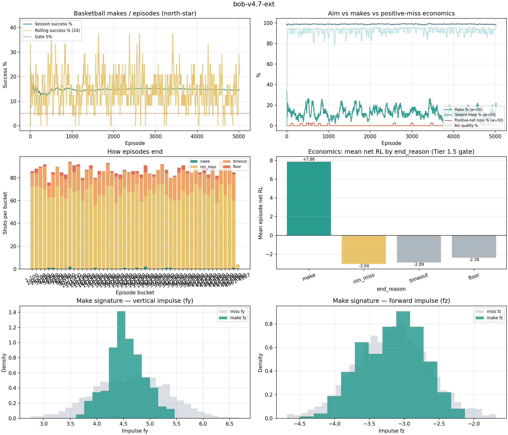
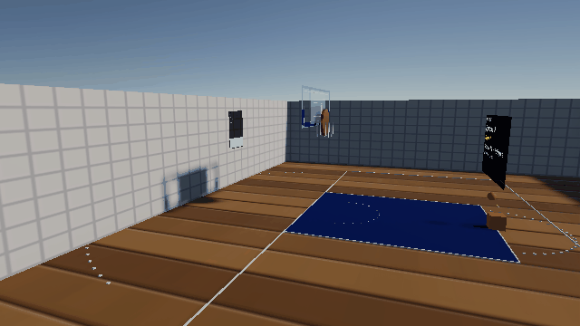
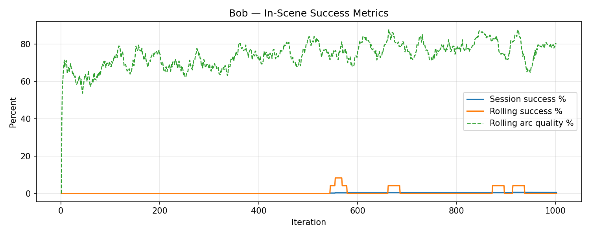

Two demos — do not mix them
- SOLVER — HeuristicOnly, launch residuals ≈ 0, near-100% swish. Environment proof.
- INFERENCE — v4.8 ONNX, residuals non-zero, about one make in three. The learned policy.
Full narrative (started 0.5%, method, ended 34.5%): How Bob learned free throws.
What you see in Play
Bob is a Deep RL free-throw agent: each episode he aims and shoots a basketball at one hoop. Made baskets add +1 score; PPO reshapes aim over thousands of shots. Audience progress lives on in-scene boards — not TensorBoard.
- One Bob launcher + one basketball per iteration
- Near-Bob floating HUD — oversized Episodes, Score, Success %, last-shot RL (camera-facing)
- Wall console — cumulative RL rewards/penalties/net + rolling success/arc graph
- Speech bubble, squash/stretch, eyes, power-path pulse, SFX on bounce/swish/score
ML learning timeline

docs/design/ml-project-timeline.md.

Training clip

Learning progress

summaries/bob_session.csv —
bob-v4.7 family @ 20× time scale.
Stack
- Unity 6 LTS + HDRP + ML-Agents PPO
- Python 3.10 trainer (
mlagents-learn) - Terraform fmt/validate in CI only — **no AWS hosting for Bob**
- GitHub Actions CI — pytest + Terraform validate
Repo
Source, training configs, and progress gallery: github.com/Bigessfour/Bob